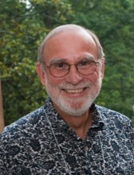

Please note: the AAS Obituaries are temporarily being hosted on this website while their full content is being ingested into the PubPub publishing platform newly adopted by the Bulletin of the American Astronomical Society. When the migration is complete, your existing links will take you to the final, migrated content. Contact peter.williams@aas.org with any questions.
Robert L. Brown (1943-2014)
Robert Lamme Brown was born on August 17, 1943 in Los Angeles, California, the middle son of three born to John R. and Vonne L. Brown. He was raised in Inglewood, California, and graduated from the University of California at Berkeley in 1965. After graduation he married his high school sweetheart, Karen Lynne Dobson. They had three children, Kendra, Lori, and Garrick. He may have been influenced in his choice of a Ph.D. research topic by his experience working in Kinsey Anderson’s cosmic ray research group as an undergraduate. He was awarded a Ph.D. in 1969 by the University of California at San Diego, where he worked under Robert J. Gould. His thesis, Interstellar Absorption of Cosmic X-rays [Phys. Rev. D, 1, 2252 1970], was on a topic of considerable interest during the pioneering years of x-ray astronomy. The American Institute of Physics noted that it was one of the 100 most cited papers in astronomy and physics during the 1970s.
In 1969 Brown began his distinguished career in radio astronomy as a postdoctoral fellow at the National Radio Astronomy Observatory (NRAO). Although trained as a theorist, he quickly became a skilled observer. His management skills did not go unnoticed, and by the time he left the NRAO to become the Director of the National Astronomy and Ionosphere Center (NAIC) in 2003, he had served as the site director of the NRAO’s Green Bank and Tucson facilities, Director of the MMA Project, and NRAO Deputy Director.
One of Brown’s most significant scientific achievements was the discovery with Bruce Balick of the compact radio source at the center of the Galaxy. On February 13 & 15, 1974, a combination of the NRAO Green Bank Interferometer with a 45-foot antenna in Huntersville, West Virginia, provided enough resolution and sensitivity to detect the faint, compact source. Later, Brown named the source Sgr A*. It has since been shown to be coincident with the center of the Milky Way, driven by a massive black hole. The discovery was a fundamental advance in our understanding of galactic nuclei. He was also an expert on radio recombination lines, writing with Jay Lockman and Gillian Knapp the review that remains the standard on the subject.
Brown also had an interest in extra-galactic astronomy, particularly, the detection of spectral lines in high redshift objects. With Morton Roberts he made the first detection of HI in absorption (z~0.7) against a quasar, 3C286 (z~0.8). Several more such detections followed. Today, HI absorption searches are a major science driver for the Square Kilometer Array. It was this experience that led him to search for CO emission from the hyper-luminous infrared galaxy F10214+4724. The detection, with Paul Vanden Bout, of the CO(3-2) rotational line extended by a factor of more than 10 the redshift of previous CO emission detections in infrared-rich galaxies. It was a major motivation for the construction of the Millimeter Array (MMA), which later evolved into the Atacama Large Millimeter/Submillimeter Array (ALMA).
Brown’s aptitude for doing several things at once served him well in his various management roles at the NRAO. He could write effortlessly and as Deputy Director was responsible for drafting the many program plans, long range plans, and reports that the National Science Foundation (NSF) required in ever increasing numbers over the years. He was a patient person, well suited to participate in the negotiations of, for example, the agreements with the Soviet Union and Japan for NRAO support of space VLBI, the merger of the MMA with the European Large Southern Array into ALMA, and the frequently contentious process that determined the NRAO investment for the year in new instrumentation. He had the perseverance required during the many years it took to realize MMA development funding for organizing workshops, conferences, and keeping the project alive. He was adventurous and liked to travel; he was the first person from the NRAO to see the future ALMA site in the high Andean altiplano above the Atacama Desert of northern Chile. He immediately recognized its potential and initiated site testing. The site has been critical to the stunning success of ALMA. Indeed, the success of ALMA owes as much to Brown’s efforts in many areas of the project as to anyone.
Brown was eager to work with young people, consistently supervising NRAO summer students and mentoring postdoctoral fellows. He supervised five graduate students in their Ph.D. research at the University of Virginia: W. S. Gilmore, A. P. Marscher, F. H. Levinson, S. G. Neff, and D. T. Frayer. He was a member of the American Astronomical Society, the International Astronomical Union, and the International Union of Radio Science.
In 2003, Brown became the Director of the NAIC and its principal facility – the Arecibo Observatory. Commuting between Cornell University, the NSF contractor for the operation of the NAIC, and the Arecibo Telescope’s site in Puerto Rico, Brown made many improvements to the operation of the observatory. He retired in 2008. He found an outlet in retirement for his energy by opening with Karen an ice cream parlor in Corolla, on the Outer Banks of North Carolina, where the family residence was located after they left Charlottesville, Virginia. In his own words, his role in the shop was “Chief Financial Officer and Head of Janitorial Services”.
Brown was devoted to his family, particularly his children and grandchildren, for whom he was always buying souvenirs on his travels. He died suddenly of a heart attack in Florence, South Carolina, while travelling to Disney World to spend time with his grandchildren. He was a very friendly, outgoing, and well-liked person. His infectious laughter was a cheering presence in the halls of the NRAO. He is missed by his family, friends, and colleagues.
Obituary written by: Paul A. Vanden Bout (NRAO)
Additional links:
BAAS Citation: BAAS, 2014, 46, 012